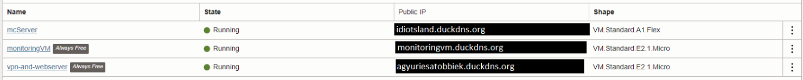

Oracle Cloud Infrastructure
Az Oracle Cloud Infrastructure (továbbá oci) az egy IaaS típusú felhőszolgáltatás. Szervereket, hálózati erőforrásokat, és tárolókat adnak bérbe. Ismertető oldaluk legelső szlogenje:
"Az új generációs felhő bármely alkalmazás működtetésére dizájnolva, hogy gyorsan és biztonságosan működjön, olcsóbbanMiért OCI?
-
MulticloudOCI képes integrálni több más felhőszolgáltatóval, mint Microsoft Azure adatbázis szolgáltatása mindezt nagy teljesítményű hálózati csatlakozással.
-
Publikus felhőSzolgáltatások tárháza alacsony árakkal több kereskedelmi és kormányzati felhő régiókon keresztül.
-
Hibrid felhőSzinte bárhol megtalálható, megbízható felhőszolgáltatás különböző megoldásokra.
-
Dedikált felhőAz OCI Dedicated Region és az Oracle Alloy több mint 100 felhőszolgáltatást biztosít publikus felhő árakkal teljes egészében a saját adatközpontunkban.
Mire használjuk mi az OCI-t?
Az OCI az ingyenes hozzáférésében is biztosít számunkra igen hasznos eszközöket, szolgáltatásokat. Az "Always Free", avagy "Mindig ingyenes" szinten is egy ügyfél kap hozzáférést:
-
két VM.Standard.E2.1.Micro "formájú"1 virtuális gépet, amely egy AMD EPYC 7551 (Nápoly) 2.0 GHz-es gépen alapszik, 1 "OCPU"2-val, 1 GB memóriával, és egy 480 Mbps-es hálózati kapcsolattal, és csak "block"3 tárhellyel.
-
a VM.Standard.A1.Flex formájú virtuális géphez, amelyhez van 3000 "OCPU-óra"4 és 18 000 "GB-óra"5 processzor és RAM hozzáférésünk. Ez a forma egy Ampere Altra 80C ARM processzoron alapszik, mely 3.0 GHz órajelen fut 80 processzor maggal, és maximum 512 GB memóriával, 1 Gbps-es hálózati kapcsolattal per OCPU, maximum 40 Gbps kapcsolattal. Ez felér maximum egy 4 virtualizált magos 24 GB-os ARM géppel, 4 Gbps-es internet kapcsolattal, amelyet felbonthatunk több kisebb részre is.
-
block tárhelyből maximum 200 GB-hoz van hozzáférésünk, amelyet használhatunk általános tárhelynek, valamint "boot volume"6-nak. Egy boot volume legkisebb mérete 50 GB.
-
maximum 5 biztonsági mentés összesen a block tárhelyekből. Külön egyedeknek a biztonsági mentései is külön számolandóak, így ha 4 külön block tárhely egységeink vannak, akkor azok biztonsági mentései is külön vannak számolva, nem pedig az összes 200 GB maximális tárhelyünket menti.
Terminológia:
-
Forma:Ez a kifejezés egy általános megnevezése a különböző alapú virtualizált gépeknek. További informáió a virtuális gép formákról itt.
-
OCPU: Oracle CPU rövidítése:AMD és Intel alapú virtualizált szervereknél két virtualizált processzor mag értendő.Ampere alapú virtuális szervereknél egy virtualizált processzor mag értendő.
-
Block tárhely:Virtualizált hálózati tárhely, iSCSI interfészen csatlakoztatva a virtuális gépekhez.
-
OCPU-óra:Ez az érték méri hány órára lett lefoglalva egy adott virtuális gép formának a virtuális processzor magjai.
-
GB-óra:Ez az érték méri hány órára lett lefoglalva egy adott virtuális gép formának a virtualizált memória mennyisége.
-
Boot volume:Block tárhely egy formája, azon tárhely, melyről a virtuális gép betölt.
Az erőforrásainkat 3 szerverre osztjuk fel:
- egy 4 magos, 24 GB memóriával, 4 Gbps hálózati kapcsolattal rendelkező szerver, 100 GB boot volume-mal az A1.flex formával, "mcServer" néven
- egy-egy E2.1.Micro formájú szerver, 1 mag, 1 GB ram, 480 Mbps hálózati sebességgel, 50-50 GB boot volume-okkal külön-külön, "monitoringVM és vpn-and-webserver nevekkel

Láthatjuk a képen is a 3 futó szervert, státuszát, publikus ip címeit - amelyeket eltakarja egy-egy duckdns.org alapú webcím -, és a szerverek formáját
Ahogy a nevük is utal rá, a szervereknek külön feladatai vannak:
-
mcServerEzen a szerveren egy Minecraft szerver fut, és annak, illetve esetleg több másik szerver fájljai találhatóak meg.Néhány megtalálható szoftver:
-
sdkman: kezelő szoftver a különböző verziójú szoftver fejlesztő csomagokhoz; főleg a különböző Java verziók kezelésére van, a különböző Minecraft verziójú szerverekhezJava: legalább egy JRE vagy JDK, és legalább 8-as verziójú
Szerver jelenleg OOS - out-of-service. Korábbi iterációja az infrastruktúrának ez a szerver felhasználta az összes tárhelyet, és -
-
monitoringVM